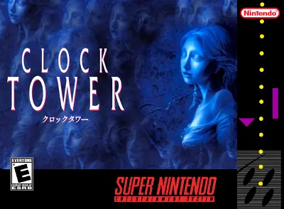

Clock Tower
Super Nintendo (Super Famicom)
Desenvolvedora: Human Entertainment
Editora: Human Entertainment
Lançamento: 1995
Gênero: Survival Horror / Point-and-Click
Modos de Jogo: Single-player
Um dos jogos mais aterrorizantes da era 16-bits e o precursor do terror de sobrevivência moderno. Diferente de jogos de ação, aqui você não atira em zumbis; você é uma órfã indefesa fugindo de um assassino implacável. A atmosfera sonora e o suspense criam uma tensão que poucos jogos conseguiram replicar.
📜 A História
Você controla Jennifer Simpson, uma órfã que, junto com suas amigas, é adotada pela misteriosa Sra. Barrows. Ao chegarem na mansão conhecida como "Clock Tower", as luzes se apagam e as amigas desaparecem. Logo, Jennifer se vê perseguida pelo Scissorman (Bobby), um assassino deformado que carrega uma tesoura de jardinagem gigante.
🎮 Destaques e Jogabilidade
- Point-and-Click no Controle: O jogo usa um cursor para mover Jennifer e interagir com o cenário. A jogabilidade é lenta e deliberada, aumentando a sensação de pavor.
- Modo Pânico: Quando o Scissorman te encurrala, você entra em "Panic Mode". Sua única chance é esmagar o botão de ação desesperadamente para empurrá-lo ou fugir, caso contrário, é morte instantânea.
- Esconde-Esconde Mortal: Não há combate. Para sobreviver, você deve se esconder em armários, embaixo de camas ou banheiros. Mas cuidado: se usar o mesmo esconderijo muitas vezes, o Scissorman aprende.
✨ Fator Replay
O jogo possui 9 finais diferentes (do Final S - o melhor, ao Final H - o pior). Cada decisão que você toma, quem você salva e quais salas explora mudam drasticamente o desfecho da história, incentivando múltiplas jogatinas.
Como Salvar
Para salvar seu progresso neste jogo, você pode salvar o arquivo .save usando as opções do emulador que está utilizando. Isso pode ser feito através do ícone 💾 no menu no canto inferior esquerdo da tela. Isso criará um arquivo de salvamento que você poderá carregar 📂 posteriormente para continuar de onde parou.